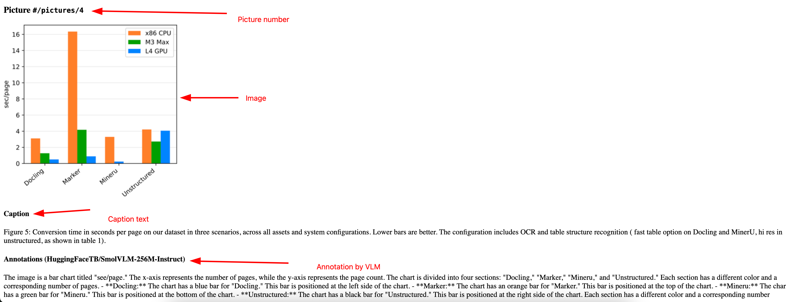

Image Captioning with Docling
Docling supports integration with Vision Language Models (VLM) to analyze images and captions embedded in a document. Building on top of Docling’s pluggable architecture, you can use different VLMs to process your documents depending on the complexity and speed required for your conversion process.
You can provide the details of the VLM you want to use and extra options for customizing the pipeline to the pipeline_options flag like you have done in previous sections.
The SmolVLM-256M vision language model provides a simple multimodal model that accepts arbitrary sequences of image and text inputs to produce text outputs.This compact model can be run locally on your system.
You can also use the more refined and bigger ibm-granite/granite-vision-3.1-2b-preview model from IBM for more complex use-cases.
See PictureDescriptionVlmOptions class^ for other models that are supported. You can also pass a HuggingFace model ID.
Lab: Image Captions with SmolVLM
-
If you have not already done it, clone the Git repository containing the sample documents that should be converted, to a folder of your choice.
$ git clone https://github.com/RedHatQuickCourses/genai-apps.git -
All the sample input files and code is in a folder called
dataprep. Change to this folder in the terminal.$ cd genai-apps/dataprep -
If you have previously created a virtual environment and installed Docling, activate the venv.
$ source venv/bin/activateYour prompt should change to indicate that you are now running in an isolated virtual environment.
-
Inspect the
image-describe.pyfile in VS Code. The input document is in thesample-datafolder. The image caotions output will be placed in the/tmp/image-describe.htmlfile.INPUT_DOC = "sample-data/docling-paper.pdf" OUTFILE = "/tmp/image-describe.html" -
In the
main()method, we set the pipeline options to use the SmolVLM model and provide some extra options:from docling.datamodel.pipeline_options import smolvlm_picture_description (1) ... pipeline_options = PdfPipelineOptions() pipeline_options.do_picture_description = True pipeline_options.picture_description_options = ( smolvlm_picture_description (2) ) pipeline_options.picture_description_options.prompt = ( "Describe the image in three sentences. Be consise and accurate." (3) ) pipeline_options.images_scale = 2.0 pipeline_options.generate_picture_images = True1 Import the SmolVLM model. 2 The model to be used for analyzing images. Here we import the smolvlm_picture_descriptionmodule since Docling has native integration with it.3 The prompt for the VLM -
After the input document is converted into a
DoclingDocumentobject, you can iterate the object tree and extract the images. In this case, we are extracting the first five pictures in the document. We extract the caption text from the image.... for pic in doc.pictures[:5]: html_item = ( f"<h3>Picture <code>{pic.self_ref}</code></h3>" f'<img src="{pic.image.uri!s}" /><br />' f"<h4>Caption</h4>{pic.caption_text(doc=doc)}<br />" ) ... -
Next, we ask the VLM model to analyze the image and annotate it textually. Finally we write both the captions and the picture annotation text to an HTML file in the
/tmp/image-describe.htmlfile.... for annotation in pic.annotations: if not isinstance(annotation, PictureDescriptionData): continue html_item += ( f"<h4>Annotations ({annotation.provenance})</h4>{annotation.text}<br />\n" ) ... -
Run the
export-images.pyfile.$ (venv) python3 image-describe.py -
Examine the output
/tmp/image-describe.htmlHTML file.
Optional Lab Steps
-
Experiment with using the bigger IBM Granite Vision models:
from docling.datamodel.pipeline_options import granite_picture_description (1) pipeline_options = PdfPipelineOptions() pipeline_options.do_picture_description = True pipeline_options.picture_description_options = ( granite_picture_description (2) )1 Import the IBM Granite VLM 2 Tell Docling to use this VLM in the processing pipeline -
You can also try other HuggingFace VLMs as follows:
from docling.datamodel.pipeline_options import PictureDescriptionVlmOptions pipeline_options = PdfPipelineOptions() pipeline_options.do_picture_description = True pipeline_options.picture_description_options = PictureDescriptionVlmOptions( repo_id="", # <-- add HF model ID here prompt="Describe the image in three sentences. Be consise and accurate.", ) pipeline_options.images_scale = 2.0 pipeline_options.generate_picture_images = True )